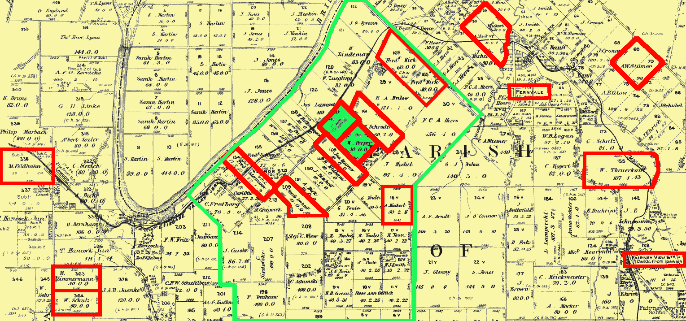
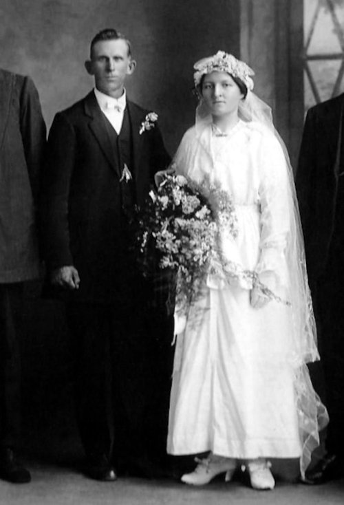
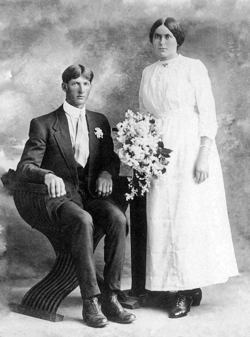

-

Postcard of Angermünde
(The house of the Forest-Warden / Forsthaus)
An old map showing Siebershof near Peetzig
The Piepers
variously spelt Piper, Pipe, Peper, Pepa, Peeper, Peiper or Pieper
(but pronounced like 'peeper' in English)
The earliest Piepers in our family who migrated to Australia were Johann Friedrich Wilhelm Pieper (known later as Wilhelm), his wife Louise Emily nee Primus and the first three of their children, Hermann ('Albert' on the migration papers – » see below), Otto and Wilhelm. They departed Hamburg May 17, 1863 and arrived in Moreton Bay on board the La Rochelle on the 7th of August that same year.
Angermünde, Günterberg, Uckermark
The Piepers' home ground was near Angermünde, a part of Günterberg in the Uckermark, in what was then Prussia but is now Germany. The particular place was called Siebershof which was about a mile from Peetzig, a Rittergut (knight's estate) and Vorwerk (see the page on the » Lobegeigers for a description of what a Vorwerk is).
Speaking of the Lobegeigers, the map of the Uckermark on their page, shows that they also came from Angermünde, so the likelihood that they were originally neighbours, acquaintances and possibly family would have been very high. It is quite well known by now that many inter-connected and inter-married families migrated to Australia either together or one after the other, for instance in 1843 Friedrich Lobejäger married Wilhelm Pieper's sister Marie and there was a 'Frau Lobejäger' as a witness to the birth of Wilhelm and Louise's son Hermann (» see below).
To give an idea of what kind of place Siebershof would have been, the following reference is taken from the Government Statistics Books of Potsdam and Berlin. In 1861, Siebershof consisted of three residential buildings and seven farm buildings with altogether 56 inhabitants. That makes an average of over 18 people per house. The entire area was about 790 hectares, 8 of which were for the main farm itself, 700 were crops, 62 were grassland and 20 were forest. They had 12 horses, 23 cows and 500 sheep.
Many of the places where our ancestors once lived are no longer in existence. Siebershof, for instance, was demolished and removed some time after WWII, or as some would say, "it was bombed after the war" but the days of this sort of place were numbered. By the 19th century, there was growing concern and discontent that a very few priveleged people owned all the land. This of course was a great driving force for migration. The feudal system had many opponents and political change was inevitable.

The Church at Greiffenberg
Greiffenberg, Church Interior

An old photo of the Greiffenberg Mill

Greiffenberg Mill Restoration Project
Greiffenberg is also of interest because that was the location of the church which recorded births, marriages, deaths, burials and so on. There was an almost straight line (about 6km long) running through Günterberg, Greiffenberg, Peetzig and Siebershof, all of which are very close to each other, and to Angermünde. It should also be noted here that the Greiffenberg, where a lot of the family's events were recorded, is a part of Angermünde in the Uckermark of Brandenburg and should not be confused with the Greiffenberg in Ostpreussen/East-Prussia (about 350 km away) or with the Greifenberg (with one 'f') which is near Munich (about 750 km away) in the south of Germany.
1852 Registration of Death
of Wilhelm's mother:
Louise Pieper born Heyse, wife of the worker Johann Pieper of Sibershof.
Buried at Greiffenberg.
The Pieper and Primus Families
The parents of Wilhelm (Johann Friedrich Wilhelm) Pieper were Johann Friedrich Pieper and Louise Heyse. At the time of recording Louise's death on 27 September 1852, she left behind her, a husband and four children, three of which were 'of age' (25 or older) and one under 25.
» Johann Friedrich Pieper (–1889)
married Louise Heyse (1790–1852) in Brandenburg, Prussia, about 1818and they had the following children:
Marie Louse Piper 29.02.1819 –
*unknownunknown
†unknownm. Johann Friedrich Gottlieb Wüstenhagen in Greiffenberg, 24.10.1841 Marie Dorothee Pieper 21.04.1822 –
*Siebershof24.07.1856
†Steinhöfelm. Friedrich Wilhelm August Lobejäger in Siebershof, 06.08.1843 Johann Friedrich Wilhelm Pieper 30.01.1826 –
*Günterberg01.12.1896
†Vernorm. Louise Dorothee Emilie Primus in Greiffenberg, 31.10.1852
m. Ernestine Wilhelmine Schulz in Ipswich, 14.10.1872Dorothee Charlotte Caroline Pieper ??.??.1828 –
*Brandenburg02.05.1869
†Nundahm. Christian Friedrich Erdmann Primus in Siebershof, 22.11.1852
m. Johann Friedrich Fischer in Greiffenberg, 18.03.1860
1865 Dorothea and Johann Fischer and children on the 'Susanne Godeffroy'.
The passenger list has a lot of other close family names, including Theuerkauf, Schulz, Stumer, Möller, Höhnke, Kraatz, Adermann, Imhoff, Dommro, Lehmann and 16 year old Carl Kruger with his family.
It has recently come to light (2022) that Wilhelm had some other family members. There was an older sister, Marie Louise Piper (born 29.02.1819), later known as Louise or Luise, who was married on 24 October 1841 to Johann Friedrich Gottlieb Wüstenhagen (born 08.03.1817). They had at least two children. One was Johann Friedrich Gottlieb, born in 1842, whose baptism was witnessed by Justine Primus and Marie Piper who was as yet unmarried. The other child was Charlotte Wilhelmine, born in 1846, whose baptism was witnessed by Friedrich Lobejäger and Charlotte Pieper.
Wilhelm also had another older sister, Marie Dorothee Pieper (21.04.1822–24.07.1856) who married Friedrich Wilhelm August Lobejäger on 6 August 1843 in Sibershof. The couple had at least four children, Carl Friedrich Wilhelm, 1845, Wilhelmine Caroline Albertine, 1849, Auguste Caroline Wilhelmine, 1852 and Ottilie Auguste Adolphine, 1855. Marie passed away, aged 34, on 24 July 1856, and the youngest child soon afterwards in 1857.
That wasn't all. Wilhelm also had a younger sister named Dorothee Charlotte Caroline Pieper (04.11.1828–02-05-1869) who married Christian Primus (27.07.1827–12.11.1859), the brother of Louise Primus, Wilhelm's wife. Christian and Charlotte had two sons, named Albert Julius Otto and Wilhelm Friedrich Erdmann. Strangely, when Wilhelm and Louise migrated to Australia, their own son Hermann was missing from both the emigration and ship's records but Albert's name and birthdate were there instead.
Nevertheless, Albert didn't actually survive very long. He died on November 11, 1853, only 1 month and 16 days old. More tragedy struck the family when Charlotte's husband, Christian Primus died on November 15, 1869. But worse was yet to come. Their other child, Wilhelm Friedrich Erdmann died in 1863, only eight years old. Charlotte then remarried on December 3, 1860, to Johann Friedrich Fischer. The couple with their children migrated to Australia, arriving on September 6, 1865 on board the 'Susanne Godeffroy'. But the horror wasn't over. They also lost Marie, their 2 year old infant child, during the trip and their other child, August, the next June. They eventually settled at Nudgee in Brisbane and had another three children who all died as babies. None of Charlotte's seven children managed to get past childhood.
Louise Primus also had a five-year-older sister, Justine Wilhelmine Primus, who was 25 years old when she married the 25 year old Johann Gottlieb August Otto Muckert in Siebershof on November 3, 1850. One of their sons, Albert Otto Ernst Muckert, born 23.11.1856, married Louisa Bertha Theuerkauf on Feb 1, 1878 in Fairney View which is next door to Vernor, in Queensland, but he died just 10 months later. Louisa Bertha remarried two months later on April 25, 1879, this time to Otto Carl Wilhelm Pieper, her first husband's first cousin, second eldest son of Wilhelm Pieper and Louise Primus. The couple had ten children, including Arthur Walter shown in the Photo Gallery below. The grandson of Johann Gottlieb Otto Muckert and Justine Wilhelmine Primus, Percy Edgar Muckert, married the granddaughter of Wilhelm Pieper and Louise Primus, Eva Bernice Pieper, our grandmother's sister, in 1914.1852 Marriages of Brothers and Sisters

On October 31, 1852 Johann Friedrich Pieper, 26, son of Johann Friedrich Pieper, Sibershof, married Louise Dorothee Primus, 22, daughter of Gottfried Primus, Sibershof.
On November 22, 1852 Dorothee Charlotte Caroline Pieper, 24, daughter of Johann Friedrich Pieper, Sibersshof, married Christian Friedrich Erdmann Primus, 25, son of Gottfried Primus, Sibershof.1853 Baptisms of Cousins (born 13 days apart)

Born September 9, 1853 Hermann Friedrich Wilhelm Piper was born to Johann Piper and Louise born Primus, in Sibersshof.
Witnesses: 1. Josephine Schäfer 2. Frau Lobejäger 3. Wilhelm Reisener
Born September 22, 1853 Albert Julius Otto Primus was born to Christian Primus, Sibershof, and Charlotte born Piper, in Sibershof.
Witnesses: 1. Carl Gerchow 2.Marie Kind 3. Henriette DrägerBushland scene near where the Piepers settled
(looking towards Spicer's Peak, unknown artist)» Johann Friedrich Wilhelm Pieper (1826–1896)
known as Wilhelm
After arriving in Australia, Wilhelm and Louise had another three children, August, Gottfried and Charles. A few months after the first of those, August was born, Wilhelm's sister Charlotte and her second husband Johann Friedrich Fischer migrated to Australia, arriving in September of 1865. Yet only a few years later, in May of 1869, Charlotte passed away, at Nudgee in Brisbane.
In January 1870, Wilhelm and Louise's youngest child, Charles, died soon after his birth and Louise herself succumbed in the following May. At that time, Wilhelm's remaining children were Hermann aged 16, Otto 13, Wilhelm 10, August 5 and Gottfried 2. Wilhelm certainly must have had his hands full running a farm at the same time as raising five young boys. It is likely though that he had help from his neighbouring family and friends.
For instance, as mentioned earlier, Louise's sister Justine had married August Muckert in 1850 and the couple, with their three children, August, Otto and Marie, migrated to Australia in 1865. As can be seen on the map shown further below, the Muckert family were living right alongside the Pieper's property. In fact, one of Justine's children, Otto Muckert later married another neighbour's daughter, Louise Bertha Theuerkauf. When Otto died only ten months later, she married Otto Pieper, the son of Wilhelm and Louise Pieper.
Whatever the case, Wilhelm didn't waste too much time in remarrying. A little over a year after Louise had passed away, he married Ernestine Wilhelmine Schulz, 16 years his junior. Ernestine had arrived in Australia with two of her sisters in March of 1872. One of her sisters, Wilhelmine was accompanied by her husband Ernst Zimmermann and their daughter Ernestine. The other sister, Friederike, married Franz Victor Pfeffer less than two months after his bride-to-be had arrived. Only five months more after that, Wilhelm and Ernestine also tied the knot.
Even with two marriages, Wilhelm only ever had sons. He had six with Louise but one died as a baby, and a further five with Ernestine, only two of which survived into adulthood. One of those was Rudolph, our great-grandfather, who married Anna Suchting in 1895, the year before Wilhelm passed away.
» Johann Friedrich Wilhelm Pieper (1826–1896) First Marriage
married his 1st wife, Louise Dorothee Emilie Primus (1830–1871) in Greiffenberg, Angermünde, 31.10.1852and they had the following children:
Hermann Friedrich Wilhelm Pieper 09.09.1853 –
*Siebershof21.02.1926
†Brisbanem. Marie Christina Wilhelmine Stumer in Ipswich, 14.05.1876 Otto Carl Wilhelm Pieper 16.07.1856 –
*Siebershof09.07.1942
†Ipswichm. Louisa Bertha Theuerkauf in Fairney View, 25.04.1879 Wilhelm Friedrich Erdmann Pieper 01.01.1861 –
*Greiffenberg14.04.1925
†Mindenm. Emilie Lehmann in Qld, 15.07.1886 August Emil Pieper 11.08.1864 –
*Qldunknown
†unknownstatus unknown Gottfried Pieper 25.08.1867 –
*Qld13.06.1919
†Qldm. Annie Menge in Qld, 30.12.1891 Charles Pieper 26.12.1869 –
*Qld04.01.1870
†Qld(nine days old)
» Johann Friedrich Wilhelm Pieper (1826–1896) Second Marriage
married his 2nd wife, Ernestine Wilhelmine Schulz (1853–1916) in Ipswich, 14.10.1872and they had the following children:
Francis Pieper 07.07.1873 –
*Qld21.04.1878
†Qld(4 years old) Rudolph Pieper 11.08.1875 –
*Qld04.10.1945
†Eskm. Anna Suchting in Qld, 13.03.1895 Ludwig Franz Pieper 01.10.1879 –
*Qld18.03.1882
†Qld(2 years old) Adolph Pieper 10.12.1882 –
*Qld26.02.1953
†Vernorm. Auguste Schroder in Qld, 28.09.1903
Wilhelm died in 1896. Ernestine remarried seven years later in 1903. Her new husband was Michael Friedrich Feldhahn who was also from Prussia. He brought with him another seven children into the marriage.New Lands
Naturally enough, in Australia, Wilhelm and Louise applied for their own land. The Records of the Queensland Government show that Land Order 65/2880, dated August 15, 1865 had three separate items, one for each of the names 'Johann' and 'Louise' and another for '2 children of Johann'. On Feb. 19th 1869, 'Wilhelm Peeper' was finally granted 40 acres of land in the Parish of North and at the same time John Stümer and August Muckert were each also accepted for 40 acres. These three men would not only become neighbours but they also had their children marry each other. That same announcement also stated that John Schneider (our 3x great-grandfather) and Henry Schneider (our 2x great-grandfather) were granted 122 acres and 123 acres, respectively, in Franklyn. The families were coming together.The Parish of North
The District of Vernor is shown (roughly) with a green outline. The Brisbane River runs along the north-western boundary.
Fernvale is in the top-right of the map
Fairney View is in the bottom-right
» Green blocks: Wilhelm Pieper's initial 40 acres of land at Vernor with a later adjoining addition.
» Red outlines: locations of some other family members:-
(from left) Michael Feldhahn (second husband of Ernestine Schulz/Pieper), Ernst Zimmermann and Wilhelmine Schulz (Ernestine's brother-in-law and sister), Fred Adermann, Jacob Imhoff, Johann Stümer (whose daughter Marie married Hermann Pieper), Wilhelm Pieper (green), William Schroeder (whose daughter Auguste married Adolph Pieper), Fred Riek (father of Wilhelmine Riek who married Friedrich Suchting), 3 lots of August Muckert (whose grandson Percy married Eva Pieper), Fernvale, W. Theuerkauf (whose daughter Louise married Otto Carl Wilhelm Pieper, son of Johann Friedrich Wilhelm Pieper) and A.W. Stumer, Fairney View
By 1874, Wilhelm's eldest son, Hermann, who was then 21 years old, had selected 100 acres of pastoral land at Tarampa and in 1878, a further 100 acres. As was mentioned by the Quarterly Electoral List of October 1882, Hermann's next youngest brother Otto, who was 24 by then, was already a freeholder of land in Fernvale (Fairney View). Later, Otto's son also named Otto, was reported to have successfully grown cotton on his farm at Brassall and his wife was also in the news for growing and selling huge (10cm) strawberries.
A strange court hearing was held in the Ipswich Police Court on the 2nd of March 1893. Niel Lorenson of Fernie View, had accused Otto Pieper of having stolen his cask. During a police raid of Otto's house, a cask was seized and eventually presented at the hearing, Otto said in court that he had bought the self-same cask in Ipswich six years earlier. The court called up all available witnesses and it was proved conclusively that the cask was not belonging to Lorenson who even admitted "I know it is not my cask but it is very much like it". Otto was fined one pound and forced to hand over the cask to Lorensen.
The Children of Wilhelm Pieper and his first wife, Louise Primus
» Hermann Friedrich Wilhelm Pieper (1853–1926)
married Marie Christine Wilhelmine Stümer (1858–1901) in Ipswich, 14.05.1876
» Otto Carl Wilhelm Pieper (1856–1942)
married Louisa Bertha Theuerkauf (1858–1921) in Fairney View, 25.04.1879
» Wilhelm Friedrich Erdmann Pieper (1861–1925)
married Emilie Lehmann (1865–1950)
in Queensland, 15.07.1886
» Gottfried Pieper (1867–1919)
married Annie Menge (1870–1940) in Qld, 30.12.1891
The Children of Wilhelm Pieper and his second wife, Ernestine Schulz
» Rudolph Pieper (1875–1945)
married Anna Suchting (1873–1924) in Vernor, 13.03.1895and they had the following children:
Adelaide Alvena Pieper 25.11.1895 –
*Lowood03.07.1970
†Brisbanem. William Pfeffer in Ipswich, 04.09.1915 Eva Bernice Pieper 06.08.1898 –
*Fernvale22.05.1991
†Caloundram. Percy Edgar Muckert in Qld, 08.12.1914 Alma Dorothy Pieper 09.10.1901 –
*Vernor06.12.1984
†Ipswichm. Benjamin Walter Schneider in Qld, 01.09.1924 Alexander Rudolph Pieper 04.09.1903 –
*Qld30.03.1981
†Kippa Ringm. Alma Ethel Boettcher in Marburg, 01.02.1928 Mildred Anna Pieper 05.09.1906 –
*Ipswich27.10.1948
†Townsvillem. Ernest Allan MacDonald in Qld, 14.04.1928
m. George Morten McClelland in Qld, 30.08.1941
March 1895
The Announcement of the marriage of Rudolph Pieper and Anna Suchting in the Queensland Times, issued 21st March.
The day after his marriage, Rudolph played cricket. He and his team won the second match.
The Suchtings played on both sides.» Adolph Pieper (1882–1953)
married Auguste Schroder (1883–1947) in Qld, 28.09.1903and they had the following children:
Alvena Dora Pieper 08.05.1907 –
*Qld06.11.1908
†Qld18 months old Colin Adolph Allen Pieper 07.06.? –
*Qld23.08.1979
†Qldunmarried Hilda Elsie Pieper 24.07.1904 –
*Qld30.06.1982
†Qldm. Allen Frederick Bischoff in Qld, 27.04.1921


The Vernor Team
It appears that some of the Pieper family had settled for Vernor to be their new home (or in German, their 'neue Heimat'). The generations that followed were born there and stayed there. Indeed, both our great-grandparents, William and Ernestine, who set up house there, passed away and were buried there. Their younger son, Adolph and his wife Auguste took over the family farm after Wilhelm died. The other son, Rudolph and his wife Anna, also had a farm in Vernor and later in Wivenhoe. Most of Rudolf and Anna's children including our grandmother Alma, were born in Vernor. The same went for Adolph and Auguste's children.
Rudolph and Anna, Adolph and Augusta, all have their final resting place at the Baptist Church Cemetery at Vernor.
Rudolph and his brother Adolph were both keen cricketers. They played for the Vernor team along with other family members, such as P. Suchting, F. Suchting, J. Suchting and A. Muckert. At the end of his life, Adolph was remembered for the many trophies he was awarded for his cricketing and rifle shooting skills. The Vernor team was also good at quoit playing. When they played against Lowood at Mr. W. F. Adermann's general store in 1898, they won by 133 points. The team skippered by J. Suchting scored the following points for Vernor: R.Pieper 59, C. Litzow, 43, P. Suchting 73, A. Pieper 76, W. Suchting 63, J. Suchting 138, O. Adermann 48 and A Kickbusch 50 with a grand total of 542. Ten days later, a large crowd attended the return match with Lowood putting in a good show attempting to seek revenge, but the Vernor team prevailed, having won by 34 points.
The Pieper Family
Photo Gallery
William Pieper and Ernestine Schulz
(our great-great-grandparentsRudolph Pieper and Anna Suchting
(our great-grandparentsAdolph Pieper and Augusta Schroeder
William Pfeffer and Adelaide Pieper (eldest daughter of Rudolph Pieper and Anna (Suchting) Pieper
Percy Edgar Muckert and Eva Bernice Pieper
Ben Schneider and Alma Pieper
(our grandparents)

Son of Rudolph Pieper and Anna (Suchting) Pieper, Alexander Rudolph Pieper and his wife Alma Ethel Boettcher
Ernest Allan McDonald and Mildred Anna Pieper (youngest daughter of Rudolph Pieper and Anna (Suchting) Pieper

Son of Otto Carl Wilhelm Pieper, 2nd eldest son of Wilhelm Pieper and Louise (Primus) Pieper, Arthur Walter Pieper and his wife Margaret Booth
Eldest son of Wilhelm Pieper and Louise (Primus) Pieper, Wilhelm Friedrich Erdmann Pieper with his wife Emilie Lehmann and their children (by age) Albert, Heinrich and Martha
A later picture of the eldest son of Wilhelm Pieper and Louise (Primus) Pieper, Wilhelm Friedrich Erdmann Pieper with his wife Emilie Lehmann

Eva (Pieper) Muckert with daughter Thelma and mother Anna (Suchting) Pieper

Durcy (our grandmother's grandmother)
Ernestine (Schulz) Pieper in later years